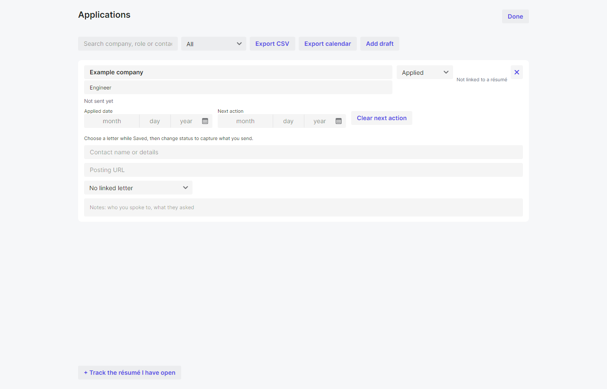
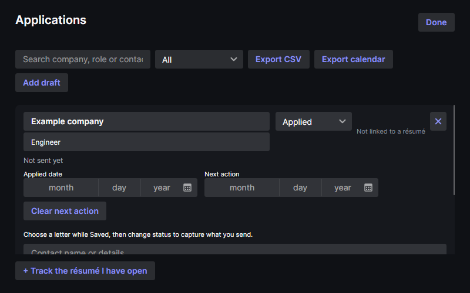

Current light and dark views rendered with synthetic fixtures. Search and active/archive/due filters sit with CSV/calendar export and Add draft. Each row edits dates, contact, posting and notes; next actions can be cleared. A draft can choose a letter before sending captures immutable content and generated PDF artifacts. Captured files can be saved later. Historical records without captures remain live links. All form content scrolls and header actions stay on screen at 800 by 500.


Pending saves and errors use the existing summary; Save retries, Done flushes, and close offers an explicit decision if persistence fails. Empty workspaces explain tracking; empty filtered results explain search/filtering.